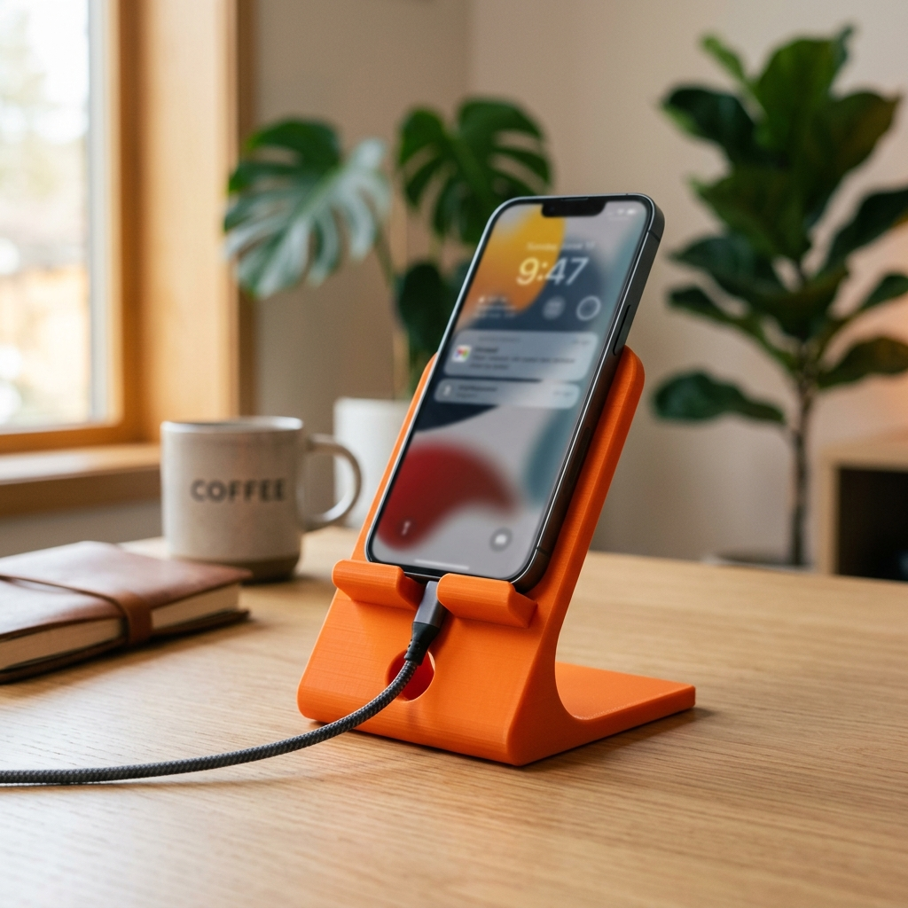

为手机打造一个舒服的“指挥椅”。
为什么这是看手机最舒服的角度？
在 Bambu Studio 里，我们“粘”出斜面：
1. 建背板：先做出一个立着的长方体。
2. 转一度：使用旋转工具，输入 60°。
3. 深嵌入：把背板的一角塞进底座里，让它们融为一体。
💡 秘诀：必须让两个零件重叠，切片后才不会断开！

如何让支架在放上手机后不“翻车”？
前端加一个小台阶，挡住手机滑坡。
让底座尽量大一些，重心稳稳靠前。
在背板上挖个洞，省线材又好看！
你的手机指挥椅准备开工了！🦾